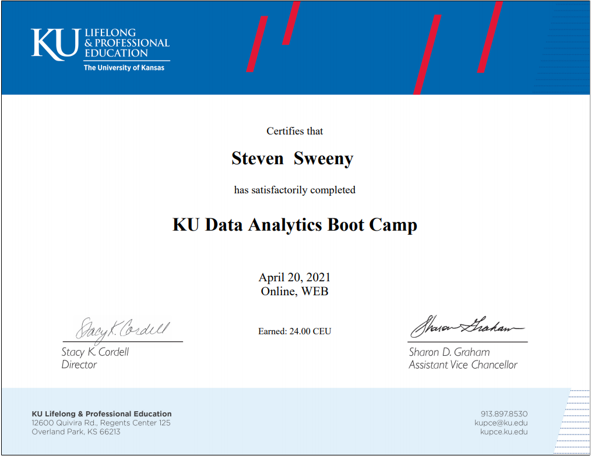
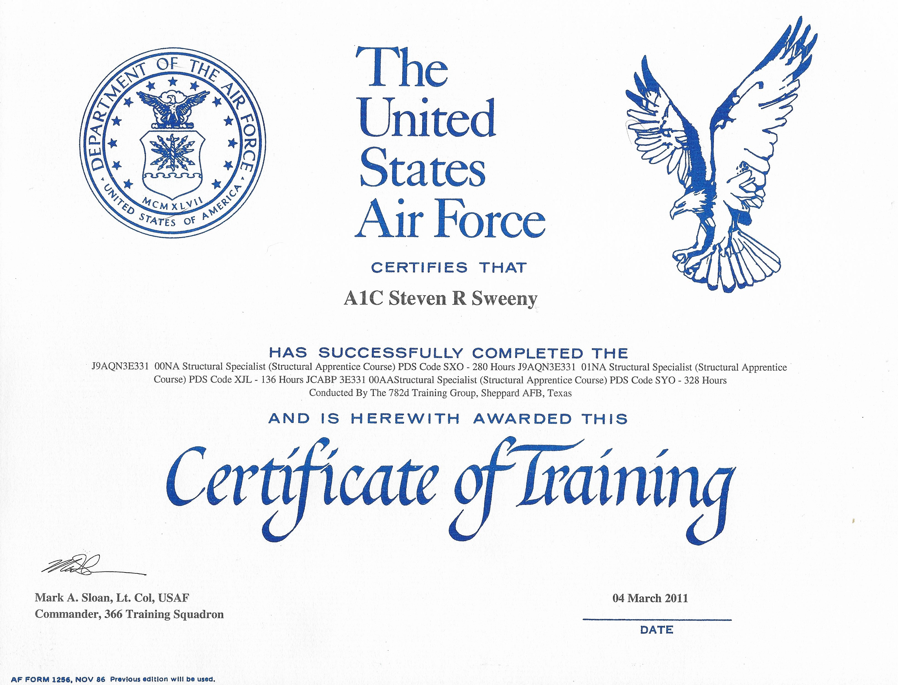

Education & Experience
Education
The University of Kansas - Trilogy Edu
Following graduation from The School of Engineering the 'Pandemic' surfaced and shallowed out employment opportunities for entry level civil engineers, especially positions pertaining to the environmental sector.
This lead to my enrollment in KU's Data Analytics Bootcamp. The tech world and realm of coding always fascinated me. I thought that this coding-based data analytics program would be my best opportunity to 'get my foot in the door' when it came to the the tech world as well as diversify my portfolio.
The University of Kansas - School of Engineering
I began my 'offical' college career at The University of Kansas. At first, I did had no idea what I was getting myself into. The University's large size and lack of interaction with superior's led to an uncharacteristic academic performance. Through trials, tribulations, and determination I was able to overcome all barriers to obtain a BS in Civil Engineering with a concentration in Environmental Engineering.
Air Force Community College
Following the completion of high school I immedietly joined the ranks of the Air National Guard of Kansas. I contributed as a member of Civil Engineering squadron in the Structural Engineering division know as the "Structure's Shop". This assignment was the main decision-making factor in regards to my choice of major. This was primarily due to the fact that one was required to obtain a civil engineering degree in order to become a 'Civil Engineering' officer.
High School(s)
I did not have your typical high school experience. My 9-12 career consisted of 6 high-schools, multiple sports teams during the same season, and an ongoing struggle to establish roots or a peer-level support system.
I was fortunate enough to spend the entirety of my last two years of high school at Ottawa high school. Here I was able to excel in academics recieving the 'Kansas Honors Scholors' award and obtain an overall GPA of approximately 3.9.
In addition to academics I also participated in extracurriculars such as cross country, wresting, and spanish club. During my senior year I help positions as Captain of the Cross Country and Wrestling teams as well as the Vice-President of Spanish Club.
Experience
Mosaic Ultra Lounge

I worked on the sales management team of the premier nightclub of Kansas City Missouri
During my time at Mosiac I worked as part of a community outreach team aimed at builing close relationships with local businesses while increasing sales for the nightclub.
The Olivia Collection

I began my career in hospitality management at "The Cave Nightclub" in Lawrence, KS. Here I started as a bartender in the undrground nightclub and was quickly promoted to 'Bar Manager' after the first year
This promotion led to to a dual role in the establishment where I worked as a bartender at the restaruant in the upstairs hotel, at the time "The Bird Dog Bar", as well as managed the bar staff of "The Cave".